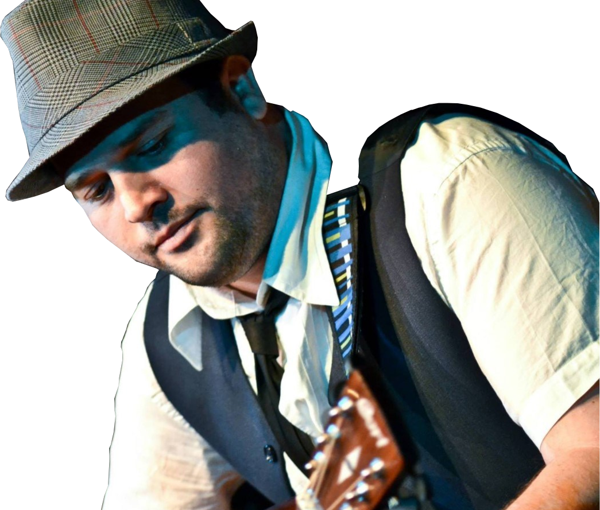

Altri artisti
Ivano e Silvano Michetti
 Nati l’11 febbraio 1947, fanno parte del complesso pop "Cugini di campagna" giá dalla prima compagine essendo due dei fondatori.
Nati l’11 febbraio 1947, fanno parte del complesso pop "Cugini di campagna" giá dalla prima compagine essendo due dei fondatori.
Hanno composto le musiche di quasi tutte le canzoni del repertorio della band; Ivano è il chitarrista fin dagli esordi ma per un certo periodo ha ricoperto il ruolo di bassista, inoltre, oltre ad essere arrangiatore, è una delle seconde voci e in alcune canzoni canta da solista.
Hanno partecipato alla terza edizione del reality show "La fattoria".
Ivano è stato recentemente condannato a quattro mesi di reclusione per non aver citato, nei registri della SIAE, l'ex componente del gruppo e coautore di molti grandi successi Flavio Paulin: l'accusa si riferisce al periodo tra il 1991 e il 1997.
Il rapporto con San Basilio
Anche Ivano Michetti è protagonista dell’intervista "La realtá di San Basilio" di Eroi di strada. Nella puntata la giornalista Ilenia Pietracalvina viene accolta nella casa “in cui è stata scritta Anima mia”, che l’artista definisce fortunata come tutto il quartiere di San Basilio. Ivano, inoltre, racconta il primo concerto a Settecamini, dove al tempo non c’era neanche una costruzione, mentre oggi è stata completamente edificata.
Alessandro D'Orazi
 Cantautore, polistrumentista, insegnante di musica, cittadino orgoglioso e appassionato del suo quartiere, Alessandro forma il suo primo gruppo a 13 anni con i ragazzi della domenica nella Chiesa di San Basilio.
Cantautore, polistrumentista, insegnante di musica, cittadino orgoglioso e appassionato del suo quartiere, Alessandro forma il suo primo gruppo a 13 anni con i ragazzi della domenica nella Chiesa di San Basilio.
Parallelamente a questo percorso artistico, Alessandro si diploma al Conservatorio di Frosinone e, nel 2011, esce con un album, "Alè".
A seguire, mentre continua ad operare sul territorio, realizza colonne sonore per alcuni film italiani (tra questi il noto “Nessuno mi può giudicare” di Massimiliano Bruno) e svolge attivitá di insegnante di chitarra per bambini, ai quali compone e dedica numerose filastrocche e canzoncine.
Il rapporto con San Basilio
Nato, cresciuto e tutt'ora residente a San Basilio, Alessandro D’Orazi è fiero del suo territorio e ha deciso di dedicare la sua vita artistica a promuoverne il bene che c’è, consapevole dei mille disagi a cui quotidianamente si va incontro.
Per San Basilio Alessandro ha addirittura scritto, composto e interpretato un inno.
Nel ‘99 nasce, per gioco, il progetto "Ciao Rino" dedicato a Rino Gaetano in occasione del ventennale della sua morte: un concerto che proprio quest’anno celebra il suo ventennale con un gruppo che non imita il cantautore ma lo reinterpreta con stile.
Claudio Zilli
Claudio Zilli, cantautore e autore di “scuola” romana, ha all’attivo numerosi brani inediti e tre album "Quello che non so" del 2009, "Lov du Maz" del 2011 e "Tristan Da Cunha" del 2013.

Ha scritto testi e musica sia per se stesso che per diversi interpreti tra cui Alessandro D'orazi, Serena Celeste (nota per il brano "La Sposa"), Arianna Giuliani, Silvano (protagonista del tormentone "che te voi magná"), Claudia Romeo e Yvonne Scarrozza.
Collabora con l'arrangiatore "Nicco Verrienti" (giá autore per Emma, Chiara, Renga ed altri). Ha scritto un intero album per Marika Socionovo.
Il brano piú gettonato del 2018 è "Sará colpa dell'estate" cantato in duetto con Sara Milani e Fabio Peretti.
Ha scritto due libri in cui parla di sé e della sua carriera da cantautore, uno intitolato "Versi scalzi di un cantautore" e l’altro, in uscita in questi giorni, "Pietre di stoffa".
Il rapporto con San Basilio
Il terzo disco contiene il suo, probabilmente, piú noto singolo "A Samba Si" dedicato proprio al quartiere di San Basilio, al quale l'artista si è dichiarato più volte molto affezionato.
Appena un anno dopo l’uscita del cd, nel 2014, esce il videoclip ufficiale del singolo "A Samba Si" girato da Mark Barring e promosso da Forsound con la partecipazione straordinaria di "Pino delle Chiaie" e il contributo affettuoso delle persone vere di San Basilio.